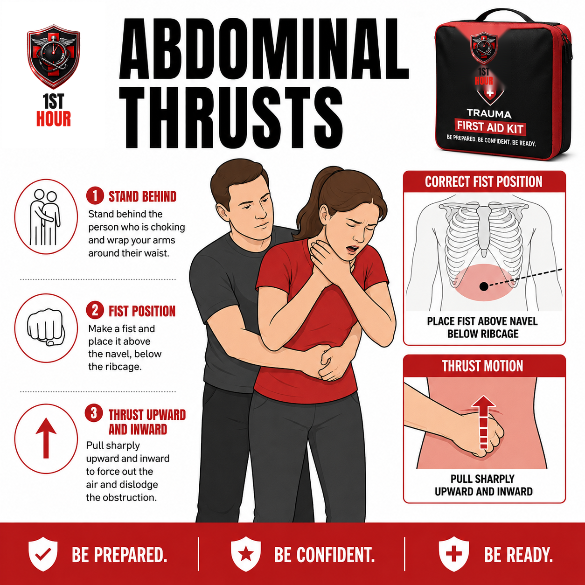
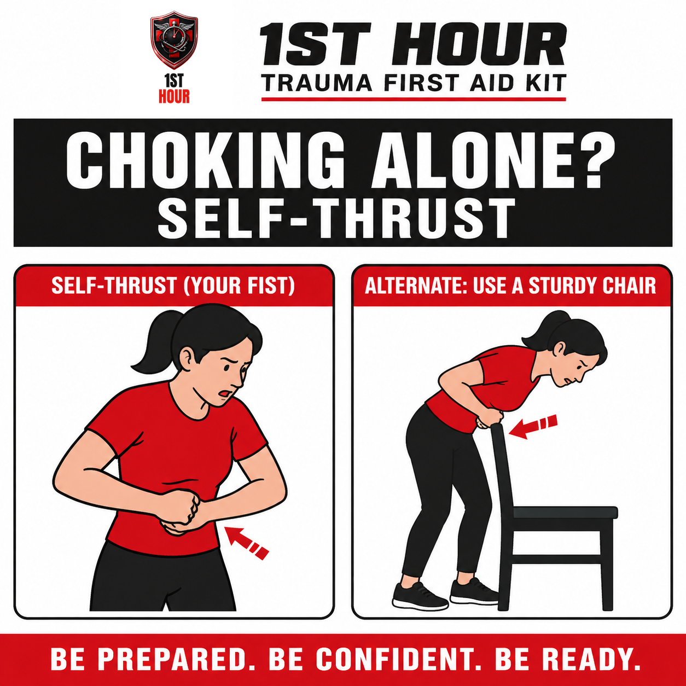
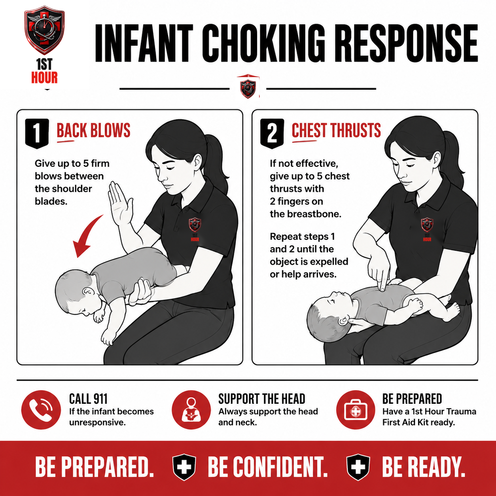

Choking & Airway Obstruction
There's almost nothing to diagnose here — just one question (can they still cough?) and a technique you need to get exactly right, for three different people it might be.
1. Why the First Few Minutes Matter
A full airway obstruction is one of the fastest-moving emergencies in this library. Unlike bleeding, where you typically have minutes to work with, a person whose airway is completely blocked can lose consciousness from lack of oxygen in as little as four to six minutes — and brain injury can begin even sooner if the blockage isn't cleared. There is no "wait and see" phase here.
The good news is that this is also one of the most mechanical, learnable emergencies to respond to. Once you know the one question that tells you whether to act, and the exact hand position and motion for the population in front of you, there's very little judgment left to exercise. This book is built around getting that technique right — not around teaching you to recognize a subtle emergency, because there usually isn't anything subtle about it.
2. Recognizing True Choking
The single diagnostic question this entire book hinges on: can they still speak, cough, or make sound?
- Forceful coughing, speaking, or crying (in an infant): the airway isn't fully blocked. Stay with them, encourage them to keep coughing, and do not perform back blows or thrusts — a forceful cough clears an object far more effectively than anything you can do to them, and physically intervening on a partial obstruction can push the object deeper.
- The universal choking sign: one or both hands clutched at the throat. This is instinctive and reliable — treat it as choking until you confirm otherwise.
- No sound, no air movement, weak or silent cough, or a high-pitched wheeze: this is a full or severe obstruction. Act immediately using the technique for their age (Sections 3, 4, or 6).
- Bluish lips or face (cyanosis): a late, serious sign that oxygen levels are dropping. Don't wait for this to appear before acting — it means you've already lost time.
3. The Abdominal Thrust (Heimlich) Technique
This is the book's single highest-stakes sequence. Read it now, before you ever need it, and re-read it once more before moving to the next section — getting the hand position and thrust direction right the first time matters more here than almost anywhere else in this library.
- If a second person is present, have them call 911 immediately while you begin the sequence below. Don't wait to see if the first attempt works before getting that call started — see Section 8 for what to do if you're the only one there.
- Stand behind the person and wrap your arms around their waist. Have them lean forward slightly. For a much taller or heavier person, you can perform the technique from a stable stance without full contact around the waist, as long as your fist lands in the correct spot.
- Make a fist with one hand. Place the thumb side of that fist against their abdomen, slightly above the navel and clearly below the tip of the breastbone (the notch where the ribs meet in the middle of the chest).
- Grasp your fist with your other hand. Keep your elbows out and away from the person's ribs.
- Give quick, forceful thrusts inward and upward — think of the motion as trying to lift them slightly off the ground through your fist, not a straight backward push. Each thrust should be a distinct, separate motion, not a continuous squeeze.
- Repeat until the object is expelled or the person becomes unconscious. Current American Red Cross first-aid guidance favors alternating between 5 back blows (Section 4) and 5 abdominal thrusts, cycling between the two, rather than relying on either technique alone. If the person loses consciousness at any point, lower them to the ground immediately and move to Section 7.

4. Back Blows
Back blows are not a lesser fallback — current American Red Cross and AHA-aligned first-aid guidance recommends alternating between back blows and abdominal thrusts for a conscious adult or child, rather than relying on abdominal thrusts alone. Some choking events clear on back blows that thrusts alone wouldn't have moved, and vice versa.
- Stand slightly to the side and just behind the person. Support their chest with one hand and have them lean forward so gravity helps the object come out, rather than travel further down.
- Use the heel of your other hand to deliver up to 5 firm, sharp blows between their shoulder blades.
- Check after each blow to see if the object has cleared, rather than automatically delivering all 5 before checking.
- If 5 back blows don't clear it, move to 5 abdominal thrusts (Section 3). Keep alternating between the two — 5 back blows, then 5 thrusts, then back to blows — until the object is out or the person becomes unconscious.
5. Self-Administered Thrusts (Alone)
This book's reader may be the one choking, not just the responder. If you're alone and cannot speak, cough, or breathe, you can still perform an effective abdominal thrust on yourself.
- Make a fist and place it above your navel, below your ribcage — the same landmark as Section 3. Grasp your fist with your other hand.
- Thrust inward and upward, sharply, the same direction as if someone else were doing it to you.
- If that doesn't work, lean over a firm, stable object — the back of a sturdy chair, a countertop edge, or a railing — and thrust your upper abdomen down and forward against the edge, in the same upward-and-inward direction.
- Repeat until the object clears. Don't stop after one attempt; keep cycling between your fist and the firm-object method.

6. Infant Choking Response
"Infant" here generally means around their first birthday or younger. Older children who can be effectively treated with the adult technique in Section 3 should get that instead. If a child's age or size is right at that boundary and you're unsure which technique fits, err toward the gentler infant technique in this section rather than the adult abdominal thrust.
- Position the infant face-down along your forearm, supporting their head and jaw with your hand, with their head lower than their chest. Rest your forearm on your thigh for stability.
- Give up to 5 firm back blows with the heel of your other hand, between the infant's shoulder blades.
- If the object hasn't cleared, turn the infant face-up along your other forearm, still supporting the head and keeping it lower than the chest.
- Give up to 5 chest thrusts using two fingers on the center of the breastbone, just below the nipple line — the same landmark used for infant CPR compressions, but quicker and sharper.
- Repeat, alternating 5 back blows and 5 chest thrusts, until the object is expelled or the infant becomes unresponsive. If unresponsive, lower the infant onto a firm, flat surface and move to Section 7 — infant CPR uses this same chest-thrust landmark.

7. If They Become Unconscious
- Lower them to the ground onto a firm, flat surface, supporting the head and body as they go down.
- Begin CPR, starting with chest compressions, if you're trained. If you're not trained, a 911 dispatcher can talk you through hands-only compressions in real time — stay on the line.
- Before each set of rescue breaths, look inside the mouth for a visible object and remove it only if you can see and reach it easily.
- Do not perform a blind finger sweep — sweeping a finger through the mouth without seeing the object first can push it further down the airway instead of clearing it.
- Continue CPR until the object is expelled, the person starts breathing on their own, or EMS takes over.
8. When to Call 911
If you're the responder and someone else is available, send them to call 911 the moment you recognize a full obstruction (Section 2), while you start back blows and abdominal thrusts right away. Don't wait to see whether the first cycle works before that call goes out.
If you're truly alone — whether you're the responder with no one else around, or you're the one choking (Section 5) — attempt several cycles of the technique first if you cannot both call and treat at the same time. If your phone is reachable and you can still move, get it on speaker before you lose the ability to talk, so a dispatcher can hear what's happening and send help even if you can't respond to them directly.
Call 911 even if the obstruction clears on its own before help arrives — see Section 9 for why a follow-up evaluation still matters.
9. Aftercare
Once the airway is clear — whether or not EMS had to get involved — a few things still matter.
- See a medical professional even after a successful clearing. Abdominal thrusts, while sometimes life-saving, carry a real (if small) risk of internal injury — a bruised or, rarely, injured organ. A follow-up evaluation is standard practice, not an overreaction.
- Watch for continued breathing difficulty, persistent coughing, throat pain, or trouble swallowing in the hours after the event — these can indicate residual airway irritation, a partial object still present, or an injury from the thrusts themselves, and are reasons to seek care promptly if they weren't already evaluated.
- Tell EMS or the treating provider exactly what was done and when — how many back blows and thrusts, whether the person lost consciousness, and for how long.
- It's normal to feel shaken afterward, especially if the person you helped is your own child. Don't hesitate to talk to someone about it.
10. What This Protocol Doesn't Require
Every other book in this library opens this section with a supplies checklist. This one doesn't need one, and padding it with unrelated kit contents would be dishonest about what actually matters here: choking response uses only your hands. There's no gauze, no tourniquet, no dressing to reach for.
- A charged, reachable phone — Section 8. The only piece of "equipment" this protocol actually depends on.
- Knowing the landmark by feel, not just by reading — Sections 3 & 6. Practice finding the correct hand position on yourself or a training mannequin before you ever need it for real.
11. Your State: Good Samaritan Protections
Every U.S. state has some form of Good Samaritan law — legal protection for people who provide reasonable emergency assistance in good faith, without expectation of payment. Responding to a choking emergency using the techniques in this guide is exactly the kind of good-faith action these laws are designed to protect. The exact wording, what's covered, and any exceptions vary by state and change over time — this is general information, not legal advice. See the pilot book (Severe Bleeding & Hemorrhage Control) for a full state-by-state overview of the twelve most populous states, or consult a licensed attorney in your state for guidance specific to your situation.
12. Medical Disclaimer
This guide is for general educational purposes only and does not constitute medical advice, diagnosis, or treatment. It is not a substitute for professional medical care, emergency medical services, or a certified first aid, CPR, or choking-response course, which we strongly recommend taking in person.
In any real emergency, call 911 (or your local emergency number) immediately. Nothing in this guide should delay that call.
The Good Samaritan law information in Section 11 is general information, not legal advice. Laws vary by state, change over time, and may have exceptions not covered here. Consult a licensed attorney in your state for guidance on your specific situation.
1st Hour and its parent company make no warranty, express or implied, regarding outcomes from applying the information in this guide, and disclaim liability for actions taken based on its contents to the fullest extent permitted by law.
Editor's note: this edition reflects content as of August 24, 2026. 1st Hour periodically revises protocol guides as best practices evolve — visit 1sthourprotocols.com/choking-airway for the current edition and to re-download the latest PDF.